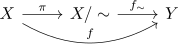

quotient topology and factorization of a surjection
Proposition
Let $(X,\mathcal{T})$ and $(Y,\mathcal{T}_Y)$ be topological spaces, $f: X \rightarrow Y$ a continuous map and $\sim$ an equivalence relation on $x$, such that
\begin{align*}
x \sim y \Rightarrow f(x) = f(y)
\end{align*}
then there exists a unique factorization

Proof
set theoretic map
Let
\begin{align*}
f_{\sim}: X/\sim \rightarrow& Y \\
[x] \mapsto& f(x)
\end{align*}
it is welldefined, since by assumption, $[x] \sim [y] \Rightarrow f(x) = f(y)$
continuous
follows from the definition of a final topology, as $f$ is continuous if and only if $f^{\sim} \circ \pi$ is continuous. Since $f$ is by assumption continuous, hence $f^{\sim}$ is also continuous